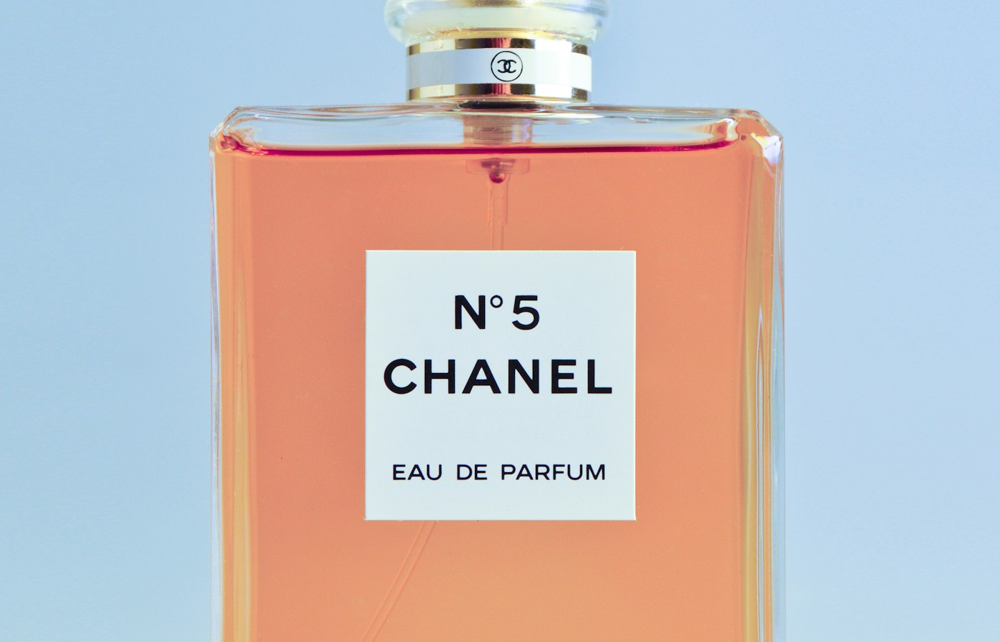
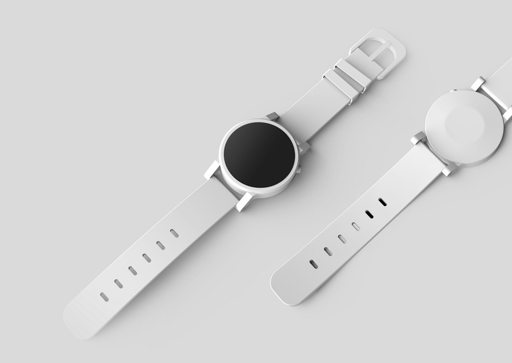
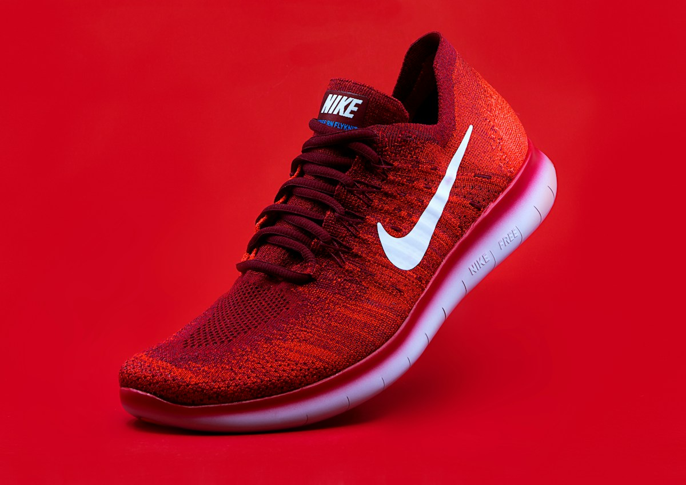
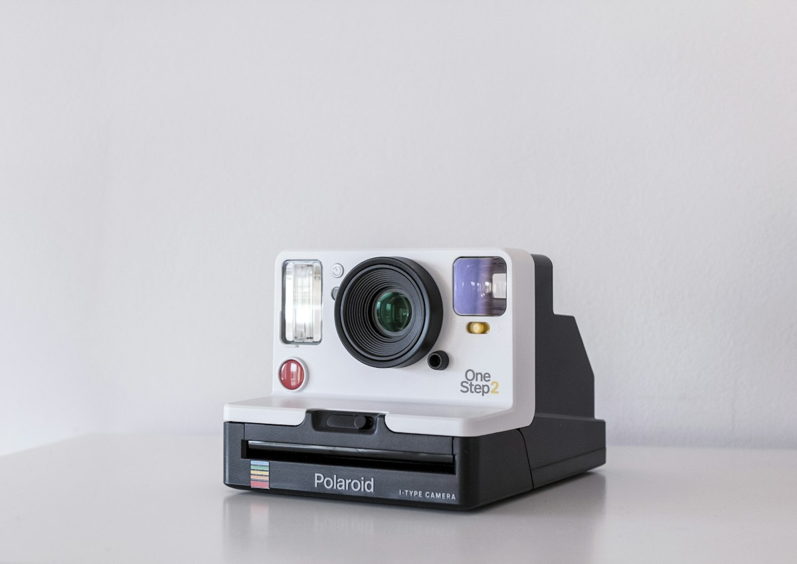

Премиальный продуктовый кадр должен ощущаться дороже, чем обычная карточка товара
Для premium-продукта недостаточно просто показать упаковку. Важно создать сцену: свет, материал, отражения, фон, масштаб и визуальное ощущение ценности. Такой кадр работает как hero-визуал, рекламный баннер, обложка презентации или ключевой образ запуска.
Premium product
Продуктовая сцена с премиальной e-commerce подачей: выразительный объект, аккуратный свет, коммерческий фокус и визуал, который можно использовать в рекламе, лендинге и презентации.

Сильный силуэт помогает продукту быстро считываться даже в рекламном потоке.

Предметная композиция подчёркивает материалы, форму и ощущение дорогого объекта.
Сцена строится вокруг продукта, а не вокруг декора
Мы используем окружение только как усилитель: свет подчёркивает форму, фон создаёт глубину, отражения добавляют premium-ощущение, а композиция оставляет достаточно воздуха для текста, логотипа или CTA.
Один hero-визуал может работать в нескольких каналах
Премиальный product visual создаётся с учётом дальнейшего использования: на лендинге нужно место под текст, в рекламе — сильный фокус, в презентации — спокойная читаемость, в social — выразительность.

Яркий рекламный кадр подходит для запуска, промо и digital-кампаний.

Минималистичная сцена помогает сохранить premium-ощущение и фокус на упаковке.
Продукт выглядит как герой кампании
Итог — коммерчески полезный premium-визуал, который можно использовать как основу для лендинга, рекламы, презентации и запуска продукта.
Что входит в сцену
Product hero, рекламный визуал, detail shot, варианты композиции, рекомендации по crop-форматам и адаптация под digital-каналы.